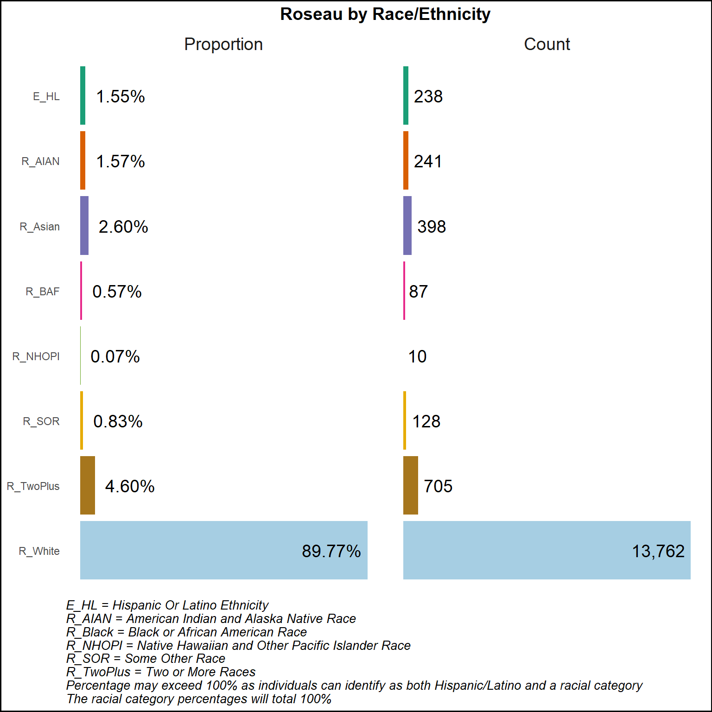
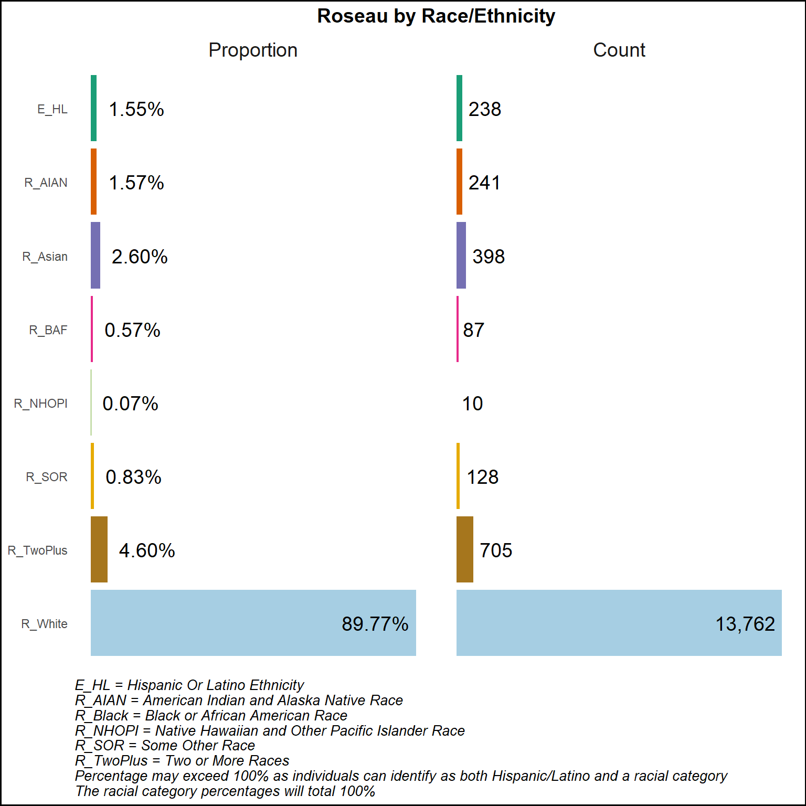

The state of Minnesota has a total land area of 79,631.54 per square (sq) mile. Polk-Norman-Mahnomen CHS area covers 3,401.65 sq miles, with Polk county having the largest land area (1,971.00 sq miles) followed by Norman county (872.79 sq miles) and Mahnomen county (557.87 sq miles) (Centers for Disease Control and Prevention/ Agency for Toxic Substances and Disease Registry/ Geospatial Research, Analysis, and Services Program 2022).
Minnesota has an average of 71.5 people living in each sq mile. In comparison, the Polk-Norman-Mahnomen CHS area has only 12.6 people per sq mile. Breaking it down further:
This means that in these three counties, people are much more spread out compared to the state average. The population density, or the number of people per sq mile, helps us understand how rural an area might be, although it is not the only factor. As shown on the following maps, Polk County has three Census Tracts that prevent it from being entirely rural.


The population of individuals age 65 and older is expected to grow over the next 10 years. This shifting demographic may result in shortages related to workforce, long term care housing, and supportive services.
The state of Minnesota had a population of 5,706,494 people. Polk-Norman-Mahnomen CHS had a total residential population of 43,044. This makes up 0.75% of Minnesota’s population (43,044/5,706,494) (U.S. Census Bureau 2020b).
Polk county is the largest of the three counties, with a population of 31,192 residents. This represents 72.47% of the total population (31,192 out of 43,044) for the Polk-Norman-Mahnomen CHS area. In relation to the state of Minnesota, Polk county accounts for 0.55% of the population (31,192 out of 5,706,494) (U.S. Census Bureau 2020b).
Norman county has 6,441 residents, making up 14.96% (6,441 out of 43,044) of the Polk-Norman-Mahnomen CHS area (U.S. Census Bureau 2020b).
Mahnomen county is the smallest, with a population of 5,411 residents. This is 12.57% (5,411 out of 43,044) of the Polk-Norman-Mahnomen CHS area, and 0.09% of the state population (5,411 out of 5,706,494) (U.S. Census Bureau 2020b).
According to the (U.S. Census Bureau 2022), the median ages for the counties are:
For the state of Minnesota, the median age was 38.5 years, and the combined median age for Polk-Norman-Mahnomen CHS area was 39.4 years, though this figure should be interpreted with caution as it wasn’t calculated from the raw data. Median age is used instead of the average age because it gives a clearer picture of the community’s age. The median age is the middle point, so it isn’t thrown off by very young or very old people. This way, we get a better idea of the typical age in the community. Mahnomen County has a younger population compared to Minnesota while Polk and Norman County have older populations compared to Minnesota with Polk county being the closest in age.
The Age Sex Population Pyramids below illustrate a generally balanced distribution of males and females across most age groups. You can determine the balance by examining the horizontal solid black midpoint line: a longer line indicates a greater difference between the male and female populations within that age group. The Age Sex Population Pyramids are based on the (U.S. Census Bureau 2022) estimates. While there is a lot to examine, comparing Minnesota to the Polk-Norman-Mahnomen CHS area reveals that the midpoint line is similar, except for the age groups 25-29, 65-69, and 70-74.


Based on the (U.S. Census Bureau 2020b) data, the White population represents the highest percentage in both Minnesota and the Polk-Norman-Mahnomen CHS area. Polk-Norman-Mahnomen CHS has a higher percentage of American Indian and Alaska Native residents, with Mahnomen County having the highest percentage among the three counties. The White Earth Nation contains 829,440 acres and encompasses all of Mahnomen County and portions of Becker, and Clearwater Counties. It’s important to compare proportions rather than counts because proportions provide a relative measure that accounts for population size differences; Mahnomen County has more than double the percentage of residents identifying as Two or More Races compared to the state of Minnesota. The Black or African American and Asian population percentages are higher in Minnesota overall than the Polk-Norman-Mahnomen CHS. Additionally, Polk and Norman counties have similar racial demographic profiles.
When looking at ethnicity data from the (U.S. Census Bureau 2020a), Polk County has a slightly higher Latino/Hispanic population compared to Minnesota overall, whereas Norman and Mahnomen counties have lower percentages of Latino/Hispanic residents.
